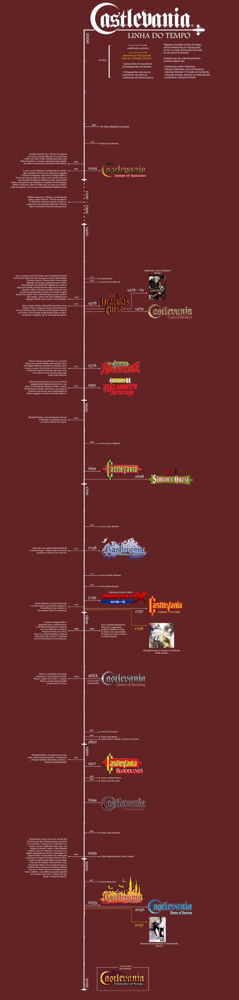

Timeline de Castlevania
Com os fatos e jogos que acreditamos ser canônicos
HYMNUS - Castlevania Harmony of Despair

Jogos em ordem cronologica
- (1094)Castlevania - Lament of Inocence(PS2)
- (1476)Castlevania III - Dracula's Curse(NES/FC)
- (1479)Castlevania - Curse of Darkness(PS2)
- (1576)Castlevania - Adventure(GB)/Adventure ReBirth(Wii)
- (1591)Castlevania II- Belmont's Revenge(GB)
- (1691)Castlevania(NES/FC)/Super Castlevania IV(SNES/SFC)/Chronicles(PS1)
- (1698)Castlevania II - Simon's Quest(NES/FC)
- (1748)Castlevania - Harmony of Dissonance(GBA)
- (1792)Castlevania - Rondo of Bload(PC engine)/The Dracula X Chronicles(PSP)
- (1797)Castlevania - Symphony of the Night(PS1)
- (18XX)Castlevania - Order of Ecclesia(DS)
- (1917)Castlevania - Bloodline/The New Generation/Vampire Killer(MD)
- (1944)Castlevania - Portrait of Ruin(DS)
- (2035)Castlevania - Aria of Sorrow(GBA)
- (2036)Castlevania - Dawn of Sorrow(DS)
- (XXXX)Castlevania - Grimoire of Souls(Mac/iOS)
Voltar para a 1ª pagina
Fonte das informações
Wiki não oficial de Castlevania(feito por fãs)